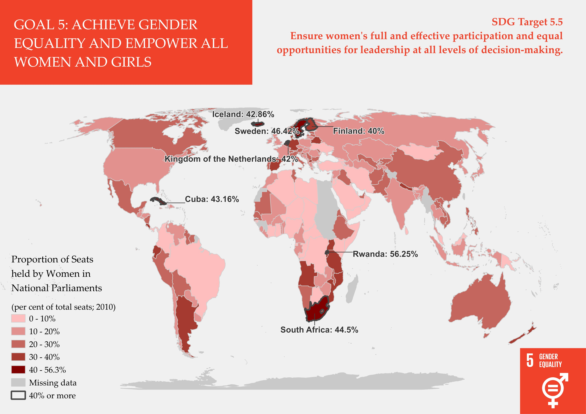

Choropleth Map
A choropleth map presents special data and statistical data about a region in one image. It uses shading patterns to represent different data ranges, making it great for visualizing large amounts of information and comparing different regions with each other.
The map below shows an indicator for progress toward Sustainable Development Goal (SDG) 5: Achieve gender equality and empower all women and girls. Specifically it highlights SDG target 5.5, which aims to “ensure women’s full and effective participation and equal opportunities for leadership at all levels of decision-making.” The indicator presented here is the proportion of seats held by women in national parliaments.
The data for this map was sourced from the UN metadata repository
Interactive Map
New technical skills gained
While making this map I learned how to clean data files and create a choropleth map in QGIS. This involved adding layers representing data for different countries, and highlighting specific values of interest and changing the layout and design of the map. I also learned to add labels and use the expression function to customize the label. To do this I got familiar with some basic syntax and variable types in QGIS. Finally, I learned how to customize and print the map with a legend and title.
The next day I continued with the choropleth map, this time learning how to use leaflet and make the map interactive online. During this process, I learned the basics of html code, and how to build up a basic website from scratch. To make the leaflet I used a template given by the instructor and modified it for my SDG.